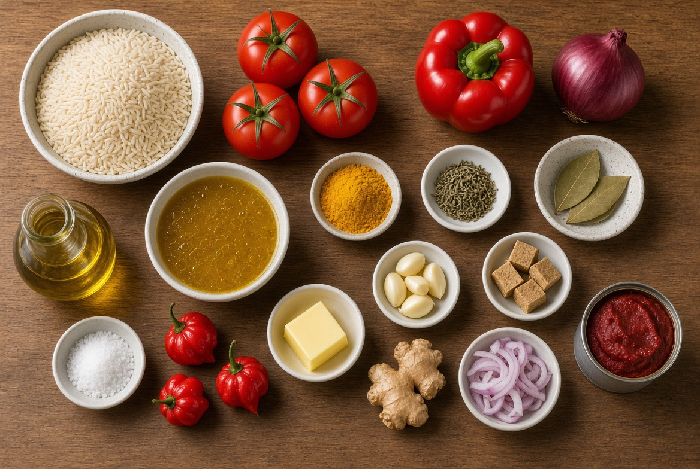
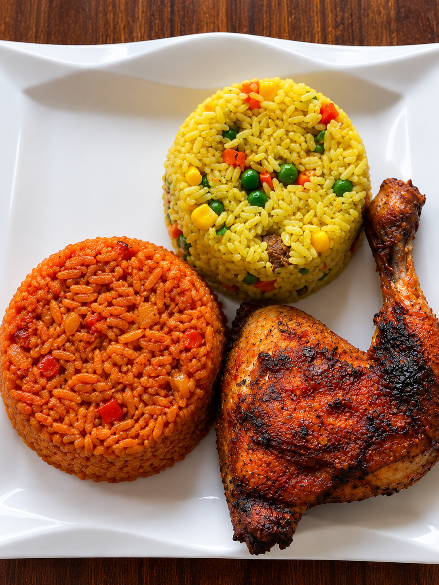

My favourite foods are;
t
- Yam and egg
- Bread and tea
- Rice and Beans
- Jollof rice
- Beans and Yam
INGREDIENTS

- Rice (the long type that doesn’t stick together easily)
- Fresh tomatoes
- Red pepper (the sweet one, not the hot one)
- Onion
- Hot pepper (like scotch bonnet or ata rodo – just a little if you don’t want it too spicy
- Tomato paste (the thick one in a tin or tube)
- Garlic
- Ginger
- Cooking oil
- Curry powder
- Thyme (the dry one)
- Bay leaf
- Stock or seasoning cube (Maggi, Knorr, or any broth)
- Salt
- Water
- Meat broth
Step-by-Step Procedure For Preparing Jollof Rice
- Step 1
- Turn on the gas and put a pot on fire
- Step 2
- Prepare the pepper mix
- Step 3
- Parboil the rice
- Step 4
- Fry the base
- Step 5
- Cook the pepper mix/dd>
- Step 6
- Add stock and rice
- Step 7
- Steam the rice
- Step 8
- Drop the pot off the gas and serve
Food is ready-dig in while it's hot.
